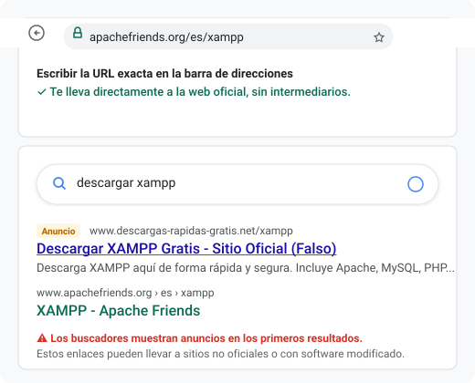

Descargar XAMPP
- Abre el navegador (Chrome, Edge o Firefox).
- Haz un clic en la barra de direcciones, la franja blanca de arriba.
- Escribe la dirección de abajo y pulsa Enter.
- Baja un poco con la rueda hasta ver el botón XAMPP for Windows y púlsalo.
- Espera: la descarga empieza sola.
Comprueba: en la carpeta
Descargas hay un archivo que empieza por
xampp-windows y termina en .exe.

¿Dónde escribirías apachefriends.org?
Si algo no sale
No encuentro el botón de descarga: la página cambia a menudo. Busca la palabra "Download" o "Descargar" en grande.
Se ha abierto una página rara: has pulsado un anuncio. Cierra la pestaña y vuelve a escribir la dirección a mano.